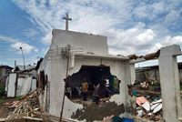
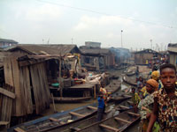

|
|
Forced Evictions"We suffered a lot… when the bulldozers came… [e]verything was lost… food utensils, television, fridge, a lot of things, my clothes, my children's clothes… my children's books, birth certificates. There was nothing [we could do]… I slept that night at that compound opposite Njemanze… I slept with my children, my husband; rain was falling." Love Bassett Okpadio, resident of Njemanze informal waterfront settlement in Port Harcourt, Rivers state, Nigeria. The home she lived in with her husband and five children was demolished on 28 August 2009. She received no eviction notice prior to the eviction, no compensation and no alternative accommodation. More than two million people have been forcibly evicted from their homes in different parts of Nigeria since 2000. Most were already marginalized and many had lived for years without access to clean water, sanitation, adequate health care or education. Forced evictions are carried out without adequate prior consultation, adequate notice and compensation or alternative accommodation. In 2006, Nigeria was named one of the three worst violators of housing rights by the Geneva-based Centre on Housing Rights and Evictions. Forced evictions are continuing throughout the country. Since 2003, an estimated 800,000 people have been removed from their homes in Abuja, the capital. Between May and July 2008 forced evictions took place on an almost weekly basis in Lagos, with some communities facing their third forced eviction. Click image to enlarge ©George Osodi - Displaced church members search for their property among the rubble of their demolished church at Makoko slum in Lagos, Nigeria, 6 May, 2005. Armed police and government workers destroyed hundreds of ramshackle houses in the downtown slum of Nigeria's main city, forcing residents into a school, a local church and makeshift shelters, witnesses said. In April 2005, bulldozers demolished houses, churches, and medical clinics in the community of Makoko, Lagos. About 3,000 people lost their homes. They said that they had not been given prior notice, were not consulted on the planned evictions, and were not given adequate alternative housing. Some of them, including children, were beaten and injured by law enforcement officials, and others had all their belongings destroyed. In Port Harcourt, the capital of Rivers state and the most populous city in the Niger Delta, large-scale forced evictions are being carried out along the waterfront despite earlier state government promises that no evictions would take place. Thousands of people are likely to lose their homes. Click image to enlarge ©Amnesty International - Women and children waiting for fishing boats in Makoko slum area. On 28 August 2009, Njemanze informal settlement in Port Harcourt, Rivers State, Nigeria, was demolished as part of the state authorities' urban renewal program for the city. It is estimated that between 13,800 and 19,000 people were forcibly evicted from their homes. These evictions were carried out without prior and genuine consultation with residents and without the provision of adequate notice, compensation or alternative accommodation and legal remedies. Thousands of people, including children, women and the elderly were left homeless and vulnerable to other human rights violations. Njemanze is one of more than 40 waterfront settlements in Port Harcourt, which make up some of the city's most densely populated areas. If the authorities continue with the planned demolitions of all remaining waterfront settlements without first implementing adequate human rights safeguards, more than 200,000 people will be at risk of losing their homes and livelihoods. The Rivers State government claims the demolition of the waterfronts is necessary to implement the Greater Port Harcourt Master Plan, the main strategy document for the city's redevelopment program. But the plan has been developed without consultation with the communities affected and it has not been made publicly available. The state governor has also repeatedly stated that "the demolition exercise [will] sanitize and check criminal activities" in the city. In addition, the enumeration (the collection of detailed information about a community, including buildings and residents) and valuation of Port Harcourt's waterfront properties have been conducted with considerable irregularities. In one settlement, these preparatory stages for demolition have been accompanied by excessive use of force by Nigerian security forces. At least 12 people were shot and seriously injured in Bundu waterfront on 12 October 2009 when armed security forces opened fire on a crowd of people peacefully protesting against the proposed demolition of their homes. Eyewitnesses told Amnesty International they saw six dead bodies piled in the back of a Hilux police pick-up truck. One body was traced to a morgue by a relative. The total number of dead remains unknown. Read more: Amnesty International "'Just Move Them': Forced Evictions in Port Harcourt, Nigeria" Read more: Amnesty International, "Port Harcourt Demolitions: Excessive Use of Force Against Demonstrators" Read more: Slum Stories. Human Rights Live Here For technical details relating to the geospatial analysis presented on this site, visit the website of the American Association for the Advancement of Science. |
||
| © Copyright 2011 Amnesty International USA |


{kind=link}
{kind=link}